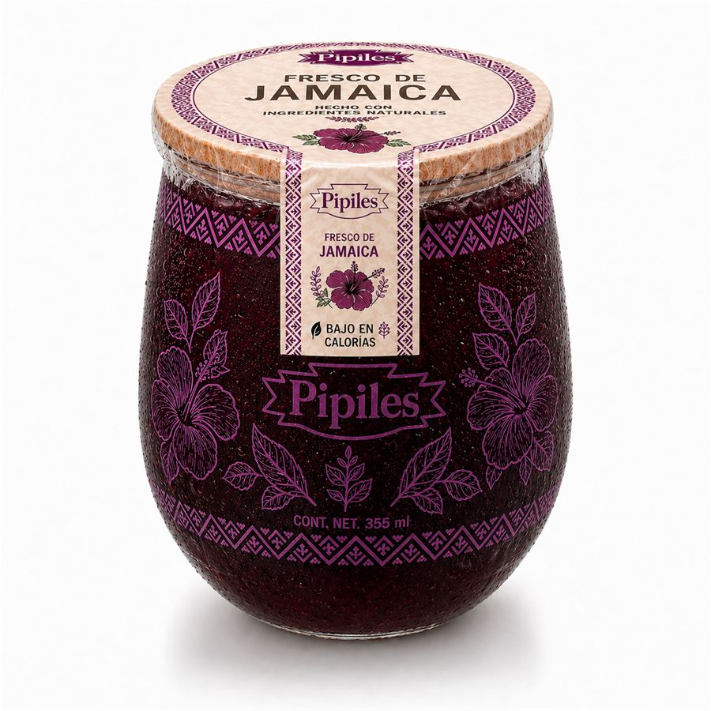
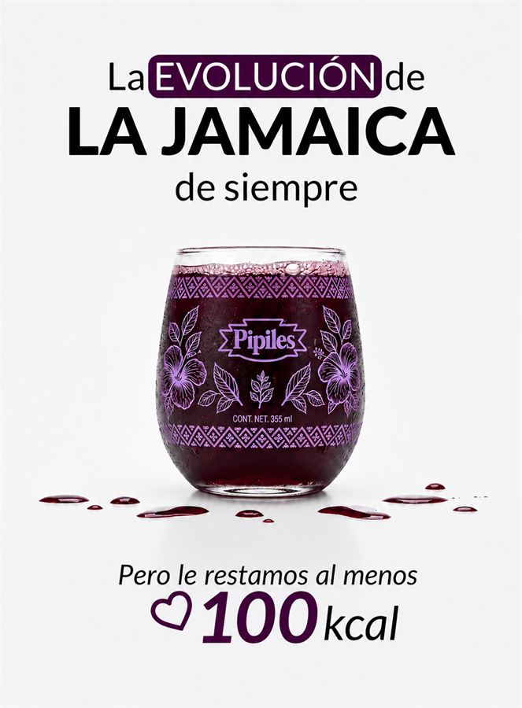
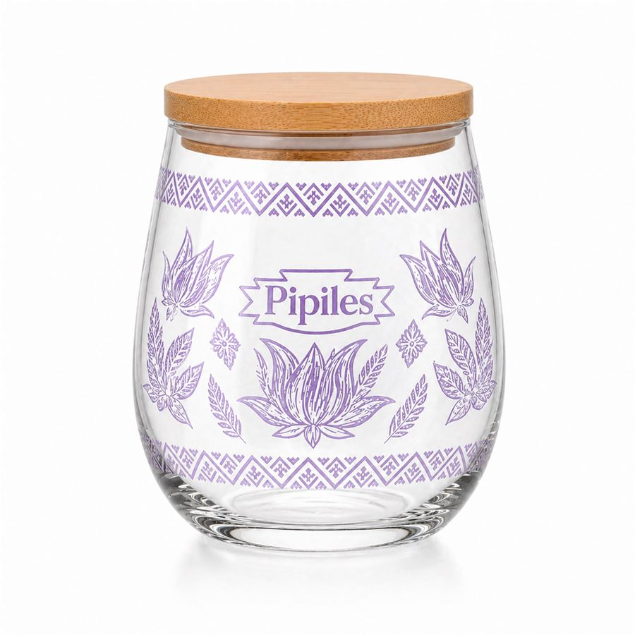
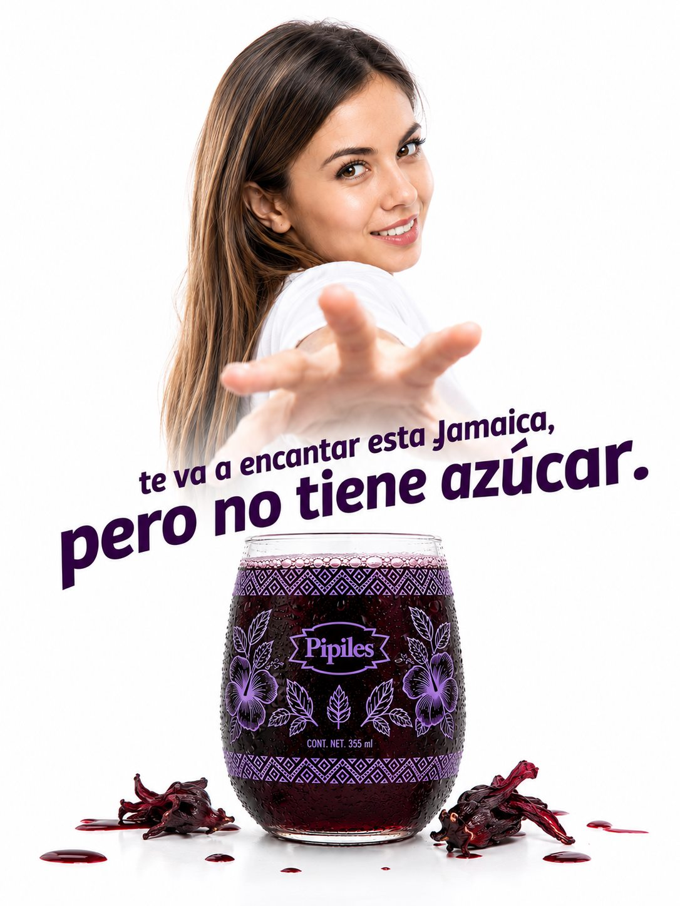

Esta guía unifica la forma en que Pipiles se ve, se escribe y se presenta. La marca debe sentirse joven, fresca, juguetona y auténticamente salvadoreña en cada punto de contacto.
La identidad de Pipiles debe sostener una presencia fresca, cercana y reconocible. El sistema se apoya en un logotipo expresivo, una paleta violeta con acento coral, fondos crema, fotografía de producto natural y referencias visuales inspiradas en lo local.
Versión principal: logo morado profundo sobre fondo crema.
Versión invertida: logo crema sobre fondo morado profundo.

Versión coral: logo blanco sobre fondo #EF6461.
Logotipo
El logotipo es la firma principal de Pipiles. Debe aparecer con nitidez, sin efectos decorativos y con suficiente contraste.
Sus usos permitidos son morado profundo sobre crema, crema sobre morado y blanco sobre coral Pipiles cuando se necesita un acento más alegre.
El margen de seguridad se calcula con la altura visual de la letra P.
Logotipo
Espacio libre
No debe colocarse texto, fotografía, borde, icono ni elemento gráfico dentro del área de protección.
El espacio libre mínimo debe crecer proporcionalmente con el tamaño del logotipo.
Digital: mantener lectura clara en perfiles, historias y formularios.Impresión: evitar reducciones que cierren los trazos del logotipo.
Logotipo
Tamaño mínimo
El logotipo debe conservar legibilidad en etiquetas, vasos, piezas digitales, afiches y documentos comerciales.
Si el formato exige reducirlo más, se debe priorizar una composición más limpia antes que forzar la marca.
Logotipo
Posición general
En composiciones editoriales, de empaque o comerciales, ubica el logo en una esquina o centrado sobre el eje vertical.
Pipiles debe sentirse presente y alegre, pero nunca competir con la bebida, el empaque o el beneficio principal del producto.
Horizontal: uso predeterminado.Vertical: solo para formatos estrechos.
Logotipo
Rotación
La marca se usa normalmente en horizontal. La rotación a 90 grados es aceptable solo si ayuda a ocupar mejor un formato vertical o lateral.
No alterar proporciones.
No agregar sombras decorativas.
No cambiar el color del logotipo fuera de la paleta.
No colocarlo sobre fondos que compitan.
Jamaica natural
No convertir frases o sabores en parte del logotipo.
Logotipo
No hacer
La marca debe conservar su estructura original. Cualquier efecto, distorsión o agregado reduce su lectura y vuelve inconsistente la identidad.
Morado Pipiles#310448
CMYK
80 100 30 45
Pantone
2627 C aprox.
Lavanda fresca#E1B4F4
CMYK
10 28 0 0
Pantone
2562 C aprox.
Coral jamaica#EF6461
CMYK
0 70 55 0
Pantone
178 C aprox.
Crema natural#FFF9EC
CMYK
0 2 8 0
Pantone
7499 C aprox.
Gris semilla#6D676E
CMYK
45 40 35 20
Pantone
Cool Gray 10 C aprox.
Blanco#FFFFFF
CMYK
0 0 0 0
Pantone
Papel blanco
Negro#000000
CMYK
0 0 0 100
Pantone
Black C
Color
La paleta parte de morado profundo, lavanda, coral, crema, gris, blanco y negro. El morado funciona como base de identidad; el coral debe usarse para acentos, llamados de atención y detalles con energía.
Los CMYK y Pantone son aproximaciones optimizadas para impresión. Antes de producir empaques o material final, conviene hacer una prueba física con el proveedor.
Fresco que se siente local
Titulares: Lato Black, directo y con energía.
Jamaica salvadoreña, baja en calorías y lista para acompañar la comida.
Subtitulares: Lato Semi-Bold.
Pipiles presenta bebidas tradicionales locales con una mirada fresca: sabor familiar, menos calorías, empaque cuidado y una identidad visual que conecta con El Salvador.
Texto largo: Lato Regular con interlineado amplio.
Tipografía
Lato es la tipografía de trabajo para titulares, textos comerciales, documentos, piezas digitales y materiales de empaque.
Los subtitulares utilizan la tipografía Lato Semi-Bold.
El logotipo tiene dibujo propio y no debe ser recreado con una fuente.

Producto como protagonista: limpio, apetecible y reconocible.

Color y composición con energía juvenil.
Fotografía
La fotografía debe mostrar el producto real, la flor de jamaica, la frescura de la bebida y el empaque. Debe sentirse natural, luminosa y cercana.
Evita imágenes oscuras, genéricas o demasiado editadas. Pipiles necesita verse refrescante y confiable.

Ejemplo de empaque sugerido.
Empaque sugerido
Se sugiere mantener el vaso de vidrio, la tapa con acabado tipo madera y una etiqueta limpia que combine el carácter natural del producto con patrones inspirados en la cultura Nahua Pipil.
La marca puede usar ilustraciones de jamaica y detalles geométricos, siempre cuidando que el resultado se sienta artesanal, fresco y no recargado.
Escritura
Narrativa de marca
Pipiles no debe hablar como una bebida industrial ni como una marca tradicional pesada. Su voz combina frescura, sabor local, bienestar y orgullo salvadoreño desde un lugar juvenil y auténtico.
JovenClásicoAuténticoIndustrial
Bebida de fábrica
Tradición sin renovación
Bebida tradicional industrializada
Voz
La voz de Pipiles debe ubicarse en el cruce entre lo juvenil y lo auténtico: habla como una marca actual, pero con raíz salvadoreña real.
Debe sonar fresca, simple y confiable. Evita sonar demasiado formal, infantil, artificial o como una bebida industrial genérica.
01
Usa frases breves, rítmicas y memorables.
02
Prioriza sabor, frescura y baja carga calórica.
03
Usa referencias salvadoreñas con naturalidad.
04
No prometas salud de forma exagerada.
Estilo
La escritura debe sonar simple, viva y limpia. Conviene usar verbos activos, beneficios concretos y detalles sensoriales que conecten con el sabor real de la jamaica.
Marketing
Aplicaciones de marca
Las piezas comerciales deben mostrar el valor de Pipiles con claridad: una bebida de jamaica familiar, baja en calorías, con empaque cuidado y personalidad salvadoreña.
Afiche de producto.

Publicación promocional.
Aplicaciones
En redes, empaque, presentaciones y materiales de venta, usa fondos claros o morados, fotografía de producto y acentos coral para dirigir la mirada.
El mensaje debe responder qué resuelve Pipiles: refrescar, acompañar comidas, reducir calorías y mantener un sabor familiar.
Composiciones
Producto al centro, fondo limpio, logotipo con contraste y una frase breve. La composición debe sentirse fresca antes que saturada.
{kind=link}